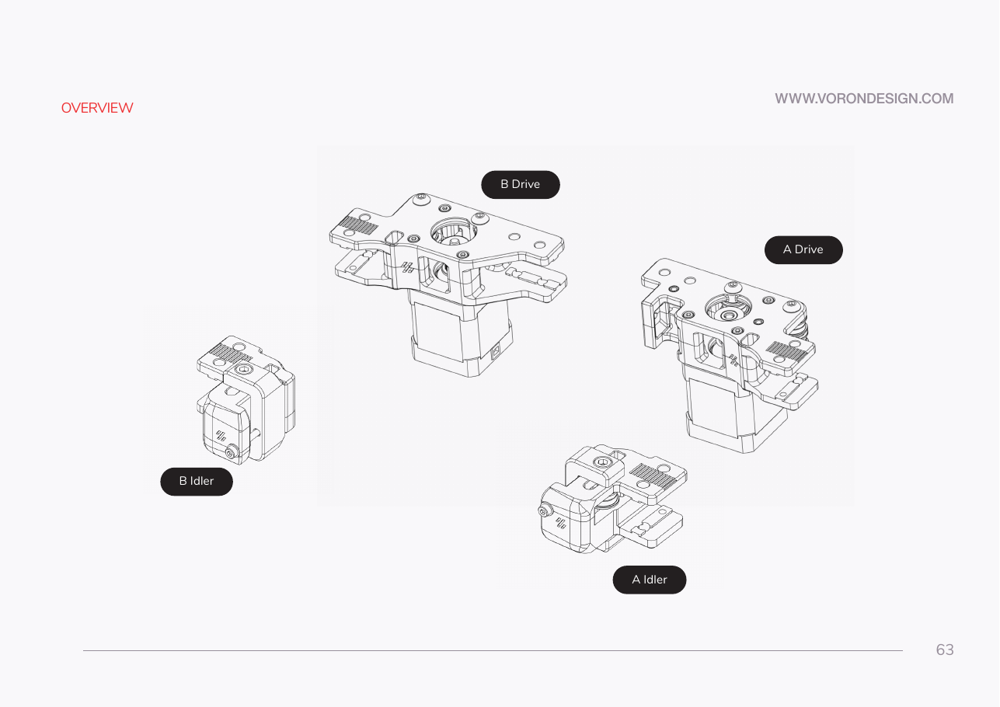
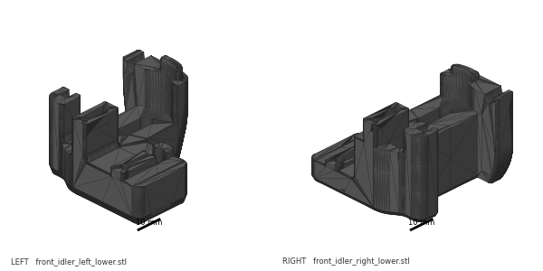
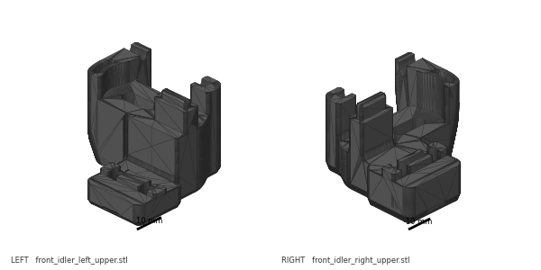
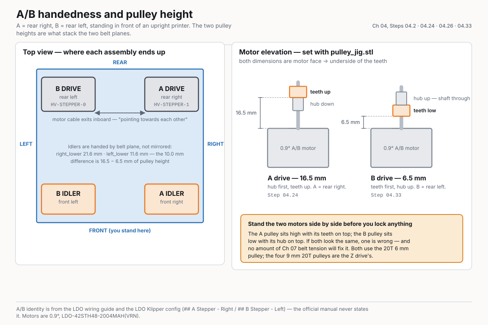

Chapter 04 — A/B drive units and front idlers¶
One page per step
Read this chapter one step per page — big pictures, prev/next, and the same tick marks. This page is the whole chapter in one scroll.
Builds the four CoreXY sub-assemblies that carry the A and B belts — two motor-carrying drive units and two front idlers with their tension arms. Unlocks Ch 05 (gantry), which bolts all four onto the Y extrusions.
What you're building in this chapter: the four corners the printer's two long belts run around. In CoreXY, two motors sit fixed at the back of the machine and pull two crossed belts; drive both the same way and the toolhead moves in X, drive them opposite ways and it moves in Y — nothing heavy has to move with the toolhead, which is why the machine can be fast (glossary). A is the rear-right corner and B the rear-left. Each is a drive unit: a printed frame in two halves, holding stacks of small flanged bearings on two standing bolts, with a stepper motor bolted underneath and a toothed pulley on its shaft. At the front, each belt turns around a front idler — the same printed sandwich of bearings, with no motor, plus an orange tension arm that carries the bearing stack on its own axle bolt and that a small screw draws forward to take up belt slack in Ch 07. The two belts run at two different heights so they never touch, and almost everything in this chapter exists to set those two heights exactly: the pulley height on each motor, the bearing-stack heights on each post, and the deliberately different heights of the two idler frames. All four assemblies are built on the bench and bagged; none of them touches the printer until Ch 05.
Time: 3.5–5.0 h hands-on, first build (survey §5.1 P04).
Sessions: 6 × ~30 min — the Pause: lines below break the chapter into 6 segments; every minute figure is a first-build estimate.
Prerequisites:
- Ch 01 — Frame. Nothing from Ch 02 or Ch 03 is needed; this is bench work and can run in parallel with them (survey §5.1: P04 ← P01).
- Print batch B03 — A/B drive units + front idlers, 2 plates, 8.5 h, 119 g black (print plan). B03's plate captions were corrected 2026-09-05 to pair
front_idler_right_*with the A drive andfront_idler_left_*with B — see Step 04.2. Both plates print all eight frames either way. - Print batch B02 — the orange day, plate B02-P2, for
[a]_tensioner_leftand[a]_tensioner_right. - Print batch B00 — for
pulley_jig.stl. Without it you are setting two different pulley heights with calipers.
Tools
- Hex drivers 2 mm, 2.5 mm, 3 mm, 4 mm — a 2.5 mm ball-end helps at the M3×40
- 1.5 mm hex — the pulley set screws (verify on bench against the kit's pulleys)
- Temperature-controlled soldering iron + LDO brass M3 insert tip (4 heat-set inserts, Steps 04.3–04.4)
- Printed
pulley_jig.stl(Voron-2STLs/Tools/) - Digital caliper — pulley height fallback, and to confirm both drives match
- A 60 mm offcut of 6 mm 2GT belt, or a thin steel rule — the belt-path straightness check
- Tweezers or a small screwdriver to place spacers into the stacks without dropping them
- Masking tape + marker — label every assembly A or B as it is finished
Consumables: Loctite 243 (blue), for the pulley set screws if they are not already pre-applied.
Printed parts
Parts arrive in the bins named below (see the bin map in print/README.md#bins); check the bin label's list before you start.
| Looks like | STL | Bin | Qty | Colour |
|---|---|---|---|---|
 |
a_drive_frame_upper.stl |
04-A | 1 | Black |
 |
a_drive_frame_lower.stl |
04-A | 1 | Black |
 |
b_drive_frame_upper.stl |
04-B | 1 | Black |
 |
b_drive_frame_lower.stl |
04-B | 1 | Black |
 |
front_idler_right_lower.stl |
04-A | 1 | Black |
 |
front_idler_right_upper.stl |
04-A | 1 | Black |
 |
front_idler_left_lower.stl |
04-B | 1 | Black |
 |
front_idler_left_upper.stl |
04-B | 1 | Black |
 |
[a]_tensioner_right.stl |
04-A | 1 | Orange |
 |
[a]_tensioner_left.stl |
04-B | 1 | Orange |
All ten are in Voron-2 STLs/Gantry/AB_Drive_Units/ and STLs/Gantry/Front_Idlers/. Two more parts sit in those same folders and are not used here: [a]_cable_cover (Ch 07) and [a]_z_chain_retainer_bracket_x2 (Ch 06). Keep them bagged.
Hardware (chapter totals)
| Fastener / part | Qty | Where |
|---|---|---|
Stepper motor, 0.9°, LDO-42STH48-2004MAH(VRN) |
2 | one per drive (p.75, p.79) |
GT2 pulley, 20 T, 5 mm bore, 6 mm wide (Pulley, 2GT, 20T, 5mm ID 6mm W) |
2 | one per motor shaft (p.75, p.79). The kit has exactly two; the four 9 mm 20T pulleys are the Z-drive pulleys used in Ch 02 |
| F695 flanged bearing (5×13×4 mm) | 16 | 6 per drive (p.74, p.78) + 2 per front idler (p.65, p.69). The A/B side uses F695 only — 625-2RS is the Z-drive bearing (Ch 02) |
| M5 precision spacer, brass — the manual's "M5 shim" | 16 | one above and one below every bearing pair |
| M5×30 BHCS | 4 | 2 per drive, upper frame → lower frame (p.73, p.77) |
| M5×40 SHCS | 2 | 1 per front idler — the idler axle: first the stack-building aid, then refitted from the top through the tension arm into its M5 nut and clamped firm (p.65–66, p.69–70) |
| M3×30 SHCS | 6 | 3 per motor (p.76, p.80) |
| M3×40 SHCS | 2 | 1 per front idler — the belt tensioner screw, through the frame's front wall into the arm's heat-set insert (p.67, p.71); set with the belt on in Ch 07 Step 07.5 |
| M3 washer | 2 | under each M3×40 head (p.67, p.71) |
| Heat-set insert, brass, M3×5×4 | 4 | 2 in a_drive_frame_upper, 1 in each tension arm (p.64) |
| M5 hex nut | 2 | 1 in each tension arm foot (p.64) |
Read first
- A and B parts are mirrored and swap silently. The A drive's printed frames carry a cutout the B frames do not have (p.73, circled). Only
a_drive_frame_upperhas the two heat-set insert bosses —b_drive_frame_upperhas none. Build one complete assembly at a time; never have both sets of frames loose on the bench together. - Where each assembly ends up, standing in front of the printer: A = rear right, B = rear left. The official manual shows it (p.63, p.83 — A on the right, B on the left, seen from the front) but never writes it; the LDO wiring guide does, and the LDO Klipper config repeats it (
## B Stepper - Left,## A Stepper - Right). It follows that the A idler is the front right pair and the B idler the front left pair. src - The bearing stacks are the mistake everyone makes. Every F695 pair goes flange-out — the two plain faces touch, the two flanges face away from each other — with one spacer above the pair and one below. The drive's far post takes two such pairs (4 bearings, 4 spacers); the near post and each front idler take one (2 bearings, 2 spacers).
- The A and B pulleys sit at different heights and face opposite ways: A is hub-down at 16.5 mm (p.75), B is hub-up at 6.5 mm (p.79). That difference is what stacks the two belt planes. No amount of belt tension in Ch 07 will fix it if you set them the same.
- LDO's Build Notes have no entry for p.62–81. The only kit deviation in this whole chapter is the standing substitution from their p.19 note: brass M5 precision spacer everywhere the manual writes "M5 shim". src
Sources for this chapter:
- Voron 2.4r2 assembly manual (pinned
de7e89d) pages 62–81 — idler stacks, tension arms, drive frames, bearing stack-ups, pulley heights, motor orientation - LDO wiring guide (Rev D) — A = rear right, B = rear left; the manual draws it (p.63, p.83) but never writes it
- LDO Klipper config
leviathan-printer-rev-d-sbv2.cfg—## A Stepper - Right/## B Stepper - Left, andfull_steps_per_rotation: 400for the 0.9° A/B motors - LDO Build Notes (Rev D) — no entry exists for p.62–81; the only deviation is the standing brass M5 precision spacer substitution from their p.19 note
- LDO 350 Rev D BOM — the two 6 mm 20T pulleys vs the four 9 mm Z pulleys, and the 0.9° motor part number
- LDO heat-set insert tool guide — the four-insert pass
- Voron-2
STLs/Gantry/AB_Drive_Units, Voron-2STLs/Gantry/Front_Idlers, Voron-2STLs/Tools - survey §4.4 · print plan batches B00/B02/B03
Video coverage (Steve Builds, pre-release LDO kit — differs from Rev D+): Part 3 @0:58:20 (+3m), Part 3 @1:04:20 (+14m), Part 3 @1:07:20 (+10m), Part 3 @1:18:03 (+2m), Part 3 @1:23:20 (+9m), Part 5 @1:12:20 (+8m)
Step 04.1 — Lay the chapter out as four separate kits¶
What you're looking at: Manual p.62 opens the A/B section: ten printed parts, four sub-assemblies. Two drive units, each a two-half frame holding bearing stacks with a stepper bolted underneath, and two front idlers, the same without a motor. They are the four corners the CoreXY belts loop around.
Parts: all ten printed parts; four trays or bags.
Do:
- Label four bench areas: A DRIVE, B DRIVE, A IDLER, B IDLER.
- Put
a_drive_frame_upper+a_drive_frame_lowerin the first,b_drive_frame_*in the second,front_idler_right_*+[a]_tensioner_rightin the third,front_idler_left_*+[a]_tensioner_leftin the fourth. - Open one area at a time; mirrors never mix.
Check
Ten printed parts placed, none left over. An eleventh is [a]_cable_cover or [a]_z_chain_retainer_bracket; bag those for Ch 07 and Ch 06.
Source: Voron manual p.62 · Voron-2 STLs/Gantry/AB_Drive_Units · Voron-2 STLs/Gantry/Front_Idlers
Step 04.2 — Fix which assembly is A and which is B¶
   
What you're looking at: Manual p.63 shows the four positions; the pair renders tell the printed parts apart. A is the rear-right drive and B the rear-left, so the A idler is front-right and the B idler front-left. On the idlers the give-away is height, not handedness.
Parts: masking tape, marker.
Do:
- Write the destination on every part:
a_drive_*rear right;b_drive_*rear left;front_idler_right_*+[a]_tensioner_rightfront right;front_idler_left_*+[a]_tensioner_leftfront left. - Positions are as seen standing in front of an upright printer.
- Caliper the lower idler frames:
front_idler_right_lower21.6 mm,front_idler_left_lower11.6 mm.
Check
Every part carries its destination in marker, and the taller of the two lower idler frames is the one labelled front right.
Tip
the upper frames are handed the other way: front_idler_right_upper is 12.0 mm, front_idler_left_upper 21.6 mm. Caliper those if the lower pair is ambiguous. The 10 mm lower-frame gap is the belt-plane split.
Caution
Rev D+ / LDO: the motor identity comes from the wiring guide, not the manual: A = rear right → HV-STEPPER-1, B = rear left → HV-STEPPER-0. Get this backwards and the machine moves diagonally on a straight-line jog. src
Source: Voron manual p.63 · LDO wiring guide (Rev D) · LDO Klipper config leviathan-printer-rev-d-sbv2.cfg · Video: Part 3 @1:18:02
Step 04.3 — Heat-set the two inserts in a_drive_frame_upper¶
What you're looking at: Manual p.64: the heat-set inserts for this chapter. Only four, two into a_drive_frame_upper and one into each tension arm. It is the only drive frame with insert bosses, so two blind 4.7 mm holes beside the motor bore are the A/B test.
Parts: 2× M3×5×4 brass heat-set insert; a_drive_frame_upper.
Do:
- Find the two blind 4.7 mm bosses either side of the motor bore on
a_drive_frame_upper, ~56 mm apart. - At your ASA insert temperature, hold the part flat and press each insert straight down until flush. Let it cool.
Check
Both inserts flush and square. b_drive_frame_upper takes no inserts; bosses on it mean you picked up the A frame.
Tip
if your print batch already ran its insert pass (survey §4.4 #4), just confirm the two are present and skip ahead.
Source: Voron manual p.64 · LDO heat-set insert tool guide
Step 04.4 — Heat-set one insert into each tension arm¶
What you're looking at: Manual p.64 and the two orange tension arms: levers carrying each front idler's bearing stack, drawn forward to tension a belt. Each is a C: top boss counterbored for the M5×40 head, foot with the M5 nut pocket, back wall with one stepped bore.
Parts: 2× M3×5×4 brass heat-set insert; [a]_tensioner_left, [a]_tensioner_right.
Do: Each tension arm has one through-bore stepping from 3.5 mm to 4.7 mm. Press the insert into the 4.7 mm end, the wider opening. The 3.5 mm section is the M3×40's clearance and must stay clear.
Check
Pushed in by hand from the plain 3.5 mm end, an M3×40 SHCS runs free and picks up thread only at the insert.
Source: Voron manual p.64 · LDO heat-set insert tool guide
Step 04.5 — Press an M5 nut into each tension arm foot¶
What you're looking at: Manual p.64: an M5 hex nut dropping into a pocket in the foot of each tension arm. The vertical M5×40 axle threads into that captive nut, so the bearing stack is clamped inside the arm and moves with it.
Parts: 2× M5 hex nut; both tension arms.
Do: Drop an M5 nut into the hex pocket in the underside of each arm's foot. Seat it fully with a flat driver; it must sit below the face, never proud, or the arm will not lie flat.
Check
The nut does not rock and does not stand above the foot. Nothing holds it in yet; keep the arms flat.
Source: Voron manual p.64
Good stopping point · ~30 min since the last one
the bench is split into four labelled kits, every part carries its destination in marker, the two inserts are in a_drive_frame_upper, one is in each tension arm and both M5 nuts are seated. Unplug the iron. Nothing is stacked yet.
Step 04.6 — A idler: stand the assembly-aid bolt in the lower frame¶
What you're looking at: Manual p.65: the A front-right idler starting. front_idler_right_lower is the taller of the two lower frames, 21.6 mm against 11.6 mm. The M5×40 standing in its boss is not a fastener yet but a temporary spindle for the bearing stack.
Parts: front_idler_right_lower; 1× M5×40 SHCS.
Do: Lay front_idler_right_lower flat with its idler boss facing up. Push the M5×40 SHCS up through the boss from underneath so the thread stands vertically. It is only an alignment aid and comes out at Step 04.9.
Check
The bolt stands square to the frame and the head sits fully home underneath. If it leans, the stack will not seat.
Source: Voron manual p.65
Step 04.7 — A idler: build the bearing stack¶
What you're looking at: Manual p.65: the bearing stack. F695 bearings are 5 × 13 × 4 mm with a flange on one face. Fitted plain face to plain face, their flanges point outward, forming a channel one belt wide. A brass precision spacer each end sets stack height.
Parts: 2× M5 precision spacer; 2× F695 bearing.
Do: Thread onto the standing bolt, bottom to top: M5 precision spacer, F695 flange down, F695 flange up, M5 precision spacer. The two bearings meet plain face to plain face, flanges pointing outward.
Check
Sight the stack from the side: spacer, flange, plain, plain, flange, spacer. Both bearings spin freely and independently.
Caution
Rev D+ / LDO: the manual's "M5 Shim" is the brass M5 precision spacer in this kit — one per callout, never two stacked to make up height. src
Source: Voron manual p.65 · LDO Build Notes (Rev D) · Video: Part 3 @0:59:21
Step 04.8 — A idler: cap the stack with the upper frame¶
What you're looking at: Manual p.65: front_idler_right_upper, the 12.0 mm-tall cap. It captures the top spacer and closes the frame around the bearing pair; the two halves meeting with no gap proves nothing inside is out of place.
Parts: front_idler_right_upper (the 12.0 mm-tall one).
Do: Lower front_idler_right_upper over the stack so its nose captures the top spacer and the two frames meet along their mating faces.
Check
The two frames sit tight with no gap and no rock. A gap means a spacer or bearing is out of place.
Source: Voron manual p.65 · Video: Part 3 @1:06:14
Step 04.9 — A idler: pull the aid bolt and slide in the tension arm¶
What you're looking at: Manual p.66 and the pair render: the orange [a]_tensioner_right sliding into the channel between the two idler frames. The two arms are mirrors of each other, the same C handed the other way. The wrong hand will not lie flat in the channel.
Parts: [a]_tensioner_right (with its insert and M5 nut already fitted).
Do: Pinch the two frames together, withdraw the M5×40 SHCS downwards, and slide [a]_tensioner_right into the channel until its top boss lines up with the upper frame's hole. Keep pinching; the stack is unsupported.
Check
The arm sits flat in the channel and its top boss is concentric with the frame's top hole. If it fights you, it is [a]_tensioner_left.
Source: Voron manual p.66
Step 04.10 — A idler: refit the M5×40 SHCS from the top¶
What you're looking at: Manual p.66: the M5×40 refitted from the top as the idler's axle. Its head seats in the arm's top boss and its thread runs into the M5 nut in the foot, clamping bolt, spacers, bearings and arm into one sliding unit. Not the tensioner.
Parts: the same 1× M5×40 SHCS.
Do: Drop the M5×40 SHCS in from the top through the arm's top boss and run it down into the M5 nut in the foot until the head seats and the stack is clamped firm. It threads into steel, not plastic.
Check
Head seated in the arm's top boss, both bearings spin free, and the arm still slides fore-aft in the frame's slots (verify on bench).
Source: Voron manual p.66
Step 04.11 — A idler: fit the M3 washer and M3×40 SHCS¶
What you're looking at: Manual p.67: the M3×40 entering horizontally through the idler frame's front wall and threading into the insert in the arm's back wall. It is the belt tensioner: winding it in draws the arm toward the wall. It does not clamp the frame halves.
Parts: 1× M3 washer; 1× M3×40 SHCS.
Do:
- Washer under the M3×40 head; enter it horizontally through the frame's front wall, the face away from the extrusion, into the arm's insert.
- Run it in only until the arm meets the wall, snug. Step 07.5 sets tension.
Check
Snug, not torqued (not specified — snug). The arm sits against the wall, washer captive, head flat on the frame's front face.
Source: Voron manual p.67 · Video: Part 3 @1:07:00
Step 04.12 — A idler: check your work¶
What you're looking at: Manual p.68: the finished A idler with five features circled. Together they say the axle, the tensioner, the bearing pair and the frame halves are all where they should be.
Parts: none.
Do:
- Compare the five circled features on p.68: axle head in the arm's boss; ribbed upper frame; bearing pair flanges out; M3×40 head and washer in the frame's side; foot-flange bolt hole.
- Set it in the A IDLER tray.
Check
All five features match the page. Spin the bearing pair with a fingertip: it runs free with the frames closed.
Source: Voron manual p.68
Good stopping point · ~40 min since the last one
the A (front right) idler is complete and checked against p.68: bearings flange-out, M5×40 axle in from the top and clamped firm into the arm's nut, M3×40 tensioner with its washer snug. An idler is a self-contained unit; never stop with the aid bolt withdrawn and the stack unsupported.
Step 04.13 — B idler: stand the assembly-aid bolt in the lower frame¶
What you're looking at: Manual p.69: the B front-left idler. front_idler_left_lower is the short one at 11.6 mm, so its bearing stack sits lower. That is why the B belt runs in a lower plane than the A belt.
Parts: front_idler_left_lower (the 11.6 mm-tall one); 1× M5×40 SHCS.
Do: Lay front_idler_left_lower flat with its idler boss up and push the M5×40 SHCS up through it from underneath. The B idler's boss is lower than the A idler's; that is correct.
Check
Bolt vertical, head home. If the boss looks tall like the last one, you have the A idler's lower frame.
Source: Voron manual p.69
Step 04.14 — B idler: build the bearing stack¶
What you're looking at: Manual p.69: the same four-item stack as the A idler, spacer, F695 flange down, F695 flange up, spacer. Identical hardware, different frame height.
Parts: 2× M5 precision spacer; 2× F695 bearing.
Do: Bottom to top: M5 precision spacer, F695 flange down, F695 flange up, M5 precision spacer. Identical to the A idler.
Check
No flange visible in the middle of the stack; both bearings spin free.
Caution
Rev D+ / LDO: brass M5 precision spacer in place of the manual's "M5 shim". src
Source: Voron manual p.69 · LDO Build Notes (Rev D) · Video: Part 3 @1:23:36
Step 04.15 — B idler: cap the stack with the upper frame¶
What you're looking at: Manual p.69: front_idler_left_upper, the tall one at 21.6 mm where the A idler's upper was short. The uppers are handed the opposite way to the lowers, so two that look alike means two of the same hand.
Parts: front_idler_left_upper (the tall 21.6 mm one).
Do: Lower front_idler_left_upper over the stack until the two frames meet.
Check
Frames flush, no gap, no rock.
Source: Voron manual p.69
Step 04.16 — B idler: pull the aid bolt and slide in the tension arm¶
What you're looking at: Manual p.70: [a]_tensioner_left going into the B idler's channel, the mirror of Step 04.9.
Parts: [a]_tensioner_left.
Do: Pinch the frames together, withdraw the M5×40 SHCS downwards, and slide [a]_tensioner_left into the channel until its top boss lines up with the frame's top hole.
Check
The arm lies flat in the channel; its boss is concentric with the hole above it.
Source: Voron manual p.70
Step 04.17 — B idler: refit the M5×40 SHCS from the top¶
What you're looking at: Manual p.70: the M5×40 axle refitted from the top through the arm's top boss into its captive nut, mirror of Step 04.10. Clamped firm; it is the axle, not the tensioner.
Parts: the same 1× M5×40 SHCS.
Do: Drop it in from the top, through the arm's top boss, and run it down into the M5 nut in the arm's foot until the head seats and the stack is clamped firm, into steel.
Check
Head seated in the top boss, both bearings spin free, and the arm still slides fore-aft in the frame's slots (verify on bench).
Source: Voron manual p.70
Step 04.18 — B idler: fit the M3 washer and M3×40 SHCS¶
What you're looking at: Manual p.71: the M3×40 tensioner and its washer through the B idler frame's front wall into the arm's insert, mirroring the A idler.
Parts: 1× M3 washer; 1× M3×40 SHCS.
Do: Washer under the head, in through the frame's front wall, the face away from the extrusion, into the arm's insert, until the arm is drawn up to the wall and the screw is snug. Step 07.5 sets it.
Check
Snug, not torqued (not specified — snug). Head flat, washer captive.
Source: Voron manual p.71
Step 04.19 — B idler: check your work¶
What you're looking at: Manual p.72: the finished B idler with five circled features, plus the comparison that catches a hand error, the two idlers side by side. Their bearing pairs sit at visibly different heights, the separation between the two belt planes.
Parts: none.
Do:
- Match the five circled features on p.72: ribbed face, M5×40 head in the top boss, exposed bearing pair, M3×40 head with washer, foot-flange bolt hole.
- Set it in the B IDLER tray.
Check
All five match, bearings free. Held side by side, the two idlers' bearing pairs sit at visibly different heights.
Source: Voron manual p.72
Good stopping point · ~35 min since the last one
the B (front left) idler is complete and checked against p.72, and the two idlers sit side by side with visibly different bearing heights. Both are in their trays. Nothing is open.
Step 04.20 — A drive: upper frame face down, two M5×30 BHCS¶
What you're looking at: Manual p.73 and the pair render: a_drive_frame_upper, built upside down, flat insert face on the bench, so the two M5×30 stand up as the axles the bearing stacks thread onto. There is no pillar; the manual's post is the standing bolt.
Parts: a_drive_frame_upper; 2× M5×30 BHCS.
Do:
- Frame flat face up: drop the two M5×30 BHCS in from that face, into the 5.4 mm holes either side of the motor bore, 37 mm apart.
- Turn it over, holding the heads, so the threads stand up.
Check
An A part: the cutout circled on p.73 and two heat-set inserts. Both bolts stand square, heads underneath and fully home in the plate.
Source: Voron manual p.73 · Video: Part 3 @1:04:59
Step 04.21 — A drive: two-bearing stack on the near post¶
What you're looking at: Manual p.74: the post nearer the motor bore, taking one bearing pair: spacer, two F695 flange-out, spacer. This post carries only one belt, so it takes half the stack of the other one.
Parts: 2× M5 precision spacer; 2× F695 bearing.
Do:
- Work on the near bolt, ~17 mm from the bore centre; the far one is ~34 mm. Measure if the drawing is unclear.
- Bottom to top: M5 precision spacer, F695 flange down, F695 flange up, M5 precision spacer.
Check
One pair, flanges out, one spacer each end: four items, 10 mm of stack. Four bearings here means the wrong bolt.
Caution
Rev D+ / LDO: brass M5 precision spacer in place of the manual's "M5 shim". src
Source: Voron manual p.74 · LDO Build Notes (Rev D)
Step 04.22 — A drive: four-bearing stack on the far post¶
What you're looking at: Manual p.74: the post farther from the motor bore, taking two pairs. Both belt planes pass through this drive, so it needs two channels stacked, separated by the two spacers that meet in the middle. It is the most mis-stacked assembly in the build.
Parts: 4× M5 precision spacer; 4× F695 bearing.
Do:
- Work on the far bolt, ~34 mm from the bore centre. Measure if in doubt.
- Load two pairs bottom to top: spacer, F695 flange down, F695 flange up, spacer, spacer, F695 flange down, F695 flange up, spacer.
Check
Eight items, 20 mm of stack, exactly two spacers touching in the middle, and no flange facing another flange.
Caution
Rev D+ / LDO: all four "M5 shims" here are brass M5 precision spacers. src
Source: Voron manual p.74 · LDO Build Notes (Rev D)
Step 04.23 — A drive: close it with a_drive_frame_lower¶
What you're looking at: Manual p.74 and the pair render: a_drive_frame_lower, the other half of the printed frame, closing over both posts. The M5×30 bolts thread directly into the plastic of the lower frame, so they stop at closed-and-snug rather than torqued.
Parts: a_drive_frame_lower.
Do:
- Lower
a_drive_frame_loweronto both stacks, aligning the M5×30 threads with their blind holes. - Run both bolts down alternately, two turns at a time, until the frames meet.
- Do not over-tighten: these bolts thread into plastic.
Check
Both bearing pairs still spin free with the frames closed, and neither bolt was taken past closed-and-snug.
Source: Voron manual p.74
Step 04.24 — A drive: set the pulley on the A motor at 16.5 mm¶

{kind=link}
{kind=link}
{kind=link}
{kind=link}
{kind=link}
{kind=link}
{kind=link}
{kind=link}
{kind=link}
{kind=link}
{kind=link}
{kind=link}
{kind=link}
{kind=link}
{kind=link}
{kind=link}
{kind=link}
{kind=link}
{kind=link}
{kind=link}
{kind=link}
What you're looking at: Manual p.75: the A motor and its 20T 6 mm-wide GT2 pulley, set with the printed jig. The pulley height puts the belt in the same plane as the A idler's bearing channel; the underside of the jig's A tab repeats it without a caliper.
Parts: 1× stepper motor (0.9° A/B motor); 1× GT2 20 T 6 mm pulley; printed pulley_jig.stl.
Do:
- Slide the pulley on hub first, teeth up.
- Stand the jig on the motor face beside the pulley, letters upright, A tab toward it.
- Drop it until its teeth underside is level with the A tab underside.
Check
Caliper 16.5 mm, motor face to teeth underside, hub down. ~23 mm means pulley on tab, ~19.5 mm jig on feet.
Tip
the jig stands on its long bottom edge either side of the two feet, never on the feet; stood on the feet every height reads 3 mm high.
Jig misuse
the plate stands beside the pulley, never over the boss. Its two feet hang past the motor face; stood on the feet every height reads 3 mm high. Without the jig, set 16.5 mm with a caliper.
Caution
Rev D+ / LDO: the two A/B motors are 0.9° (LDO-42STH48-2004MAH(VRN)); the four Z motors are 1.8° and look identical. Read the label: -2004MAH = A/B (0.9°), -2004AC = Z (1.8°). Take an A/B motor, not a spare Z motor. This is why the LDO config carries full_steps_per_rotation: 400 in [stepper_x] and [stepper_y], set in Ch 12. src
Source: Voron manual p.75 · LDO Klipper config leviathan-printer-rev-d-sbv2.cfg · LDO 350 Rev D BOM · Video: Part 3 @1:11:48
Step 04.25 — A drive: threadlock and lock the pulley set screws¶
What you're looking at: Manual p.75: the pulley's two set screws. A set screw that backs out lets the pulley slip on the shaft, and a slipping A or B pulley shows up as prints that drift diagonally, not as an obvious failure.
Parts: 2× set screw (in the pulley); Loctite 243.
Do:
- Back both set screws out, a drop of Loctite 243 on each, refit.
- Land the first set screw on the shaft's flat if there is one, then the second.
- Recheck the height with the jig and caliper.
Check
The pulley will not twist or slide under firm hand pressure and still reads 16.5 mm. A dry blue patch is pre-applied threadlocker; add none.
Source: Voron manual p.75
Step 04.26 — A drive: offer the motor up with the cable exit inboard¶
What you're looking at: Manual p.75: the motor going into the frame, right way up now. The manual's rule is that the two motors' cables point at each other once both drives are on the machine, so both reach the same duct.
Parts: the A motor with its pulley.
Do: Turn the drive assembly the right way up, motor below the frames, and offer the motor into the frame with the cable exit facing inboard, toward the middle of the rear extrusion where the B drive sits.
Check
With A at the rear right, its motor cable exits toward the machine's centreline, not out toward the right skirt.
Source: Voron manual p.75 · Video: Part 3 @1:07:37
Step 04.27 — A drive: three M3×30 SHCS through the frames into the motor¶
{kind=link}
What you're looking at: Manual p.76: three M3×30 running down through both printed frames into the motor's face. Three, not four: the fourth motor hole has no clearance hole above it.
Parts: 3× M3×30 SHCS.
Do:
- Line the motor's mounting holes up with the three clearance holes around the bore.
- Start all three M3×30 SHCS by hand down through both frames into the motor.
- Tighten evenly so the motor face pulls down square.
Check
Three bolts, not four; the fourth motor hole is not used. All three pulled down evenly, motor face flat against the frame.
Source: Voron manual p.76 · Video: Part 3 @1:13:34
Step 04.28 — A drive: check your work and the belt path¶
What you're looking at: Manual p.76's elevation, and a length of belt used as a straightedge. The pulley and the two bearing channels have to lie in one flat plane, and a belt offcut laid across them shows any step in height.
Parts: a 6 mm belt offcut or a thin steel rule.
Do:
- Compare against p.76's elevation: pulley orientation and alignment with the bearing stacks.
- Lay the belt offcut flat across the pulley teeth, then each bearing pair, following the belt path.
- Label it A: REAR RIGHT and set aside.
Check
The belt path is straight: the offcut lies flat on the pulley and in each bearing groove, no tilt, no flange contact.
Source: Voron manual p.76 · Video: Part 5 @1:12:36
Good stopping point · ~50 min since the last one
the A drive is finished: 2-bearing near post, 4-bearing far post, frames closed snug, pulley at 16.5 mm hub-down and threadlocked, motor in with three M3×30 and the cable exit inboard, belt path checked straight. Labelled A — REAR RIGHT. This is the natural stop; do not leave a bearing stack loaded with the lower frame off.
Step 04.29 — B drive: upper frame face down, two M5×30 BHCS¶
{kind=link}
What you're looking at: Manual p.77 and the same pair render: b_drive_frame_upper, laid out the same upside-down way. This is the B part, with no cutout lobe on the base plate and no insert bosses. Seeing either means you picked up the A frame.
Parts: b_drive_frame_upper; 2× M5×30 BHCS.
Do: As at Step 04.20: flat face up, drop an M5×30 BHCS into each of the two 5.4 mm holes, then turn the frame over so the heads are underneath and the threads stand up.
Check
This is a B part: no cutout and no heat-set inserts. Either one means you picked up the A frame.
Source: Voron manual p.77
Step 04.30 — B drive: four-bearing stack on the far post¶
{kind=link}
What you're looking at: Manual p.78: the four-bearing post, drawn on the left on the B frame because it mirrors the A frame. It is still the post farther from the motor bore; the page position changed, the rule did not.
Parts: 4× M5 precision spacer; 4× F695 bearing.
Do:
- Work on the far bolt, ~34 mm from the bore centre. p.78 draws it left, p.74 right; measure.
- Load two pairs: spacer, F695 flange down, F695 flange up, spacer, spacer, F695 flange down, F695 flange up, spacer.
Check
Eight items, two spacers meeting in the middle, no flange face-to-face anywhere. Same 20 mm stack as the A drive.
Caution
Rev D+ / LDO: brass M5 precision spacers, not shims. src
Source: Voron manual p.78 · LDO Build Notes (Rev D)
Step 04.31 — B drive: two-bearing stack on the near post¶
What you're looking at: Manual p.78: the two-bearing post, nearer the motor bore, drawn on the right. With this the two drives hold six bearings and six spacers each.
Parts: 2× M5 precision spacer; 2× F695 bearing.
Do: On the near bolt, ~17 mm from the bore centre, drawn on the right on p.78: spacer, F695 flange down, F695 flange up, spacer.
Check
Four items, 10 mm. Both drives now hold six bearings and six spacers each; count them before closing.
Caution
Rev D+ / LDO: brass M5 precision spacers, not shims — the last two of the sixteen this chapter uses. src
Source: Voron manual p.78 · LDO Build Notes (Rev D)
Step 04.32 — B drive: close it with b_drive_frame_lower¶
What you're looking at: Manual p.78: b_drive_frame_lower closing the B drive. Same plastic threads, same rule: closed and snug, then stop.
Parts: b_drive_frame_lower.
Do: Lower b_drive_frame_lower onto both stacks and run the two M5×30 BHCS down alternately until the frames meet.
Check
Do not over-tighten: these bolts thread straight into plastic. Both bearing pairs spin free with the frames closed.
Source: Voron manual p.78
Step 04.33 — B drive: set the pulley on the B motor at 6.5 mm — flipped¶
{kind=link}
What you're looking at: Manual p.79: the B motor's pulley, fitted the other way up from the A drive's. The two pulley heights, 16.5 mm on A and 6.5 mm on B, separate the two belt planes; set them the same and the belts rub.
Parts: 1× stepper motor (0.9° A/B motor); 1× GT2 20 T 6 mm pulley; pulley_jig.stl.
Do:
- Slide the pulley on teeth first, hub up.
- Stand the jig on the motor face beside the pulley, B tab toward it.
- Push it down to level its teeth underside with the B tab underside, 6.5 mm.
Check
Caliper 6.5 mm, motor face to teeth underside, hub up. ~13 mm means pulley on tab. Side by side, A high, B low.
Source: Voron manual p.79 · Video: Part 3 @1:12:46
Step 04.34 — B drive: threadlock and lock the pulley set screws¶
What you're looking at: Manual p.79: the B pulley's set screws, threadlocked and re-measured, exactly as on the A drive.
Parts: 2× set screw (in the pulley); Loctite 243.
Do: Loctite 243 on both set screws, first one onto the shaft flat if there is one, then the second. Re-measure with the jig and then the caliper after tightening.
Check
No slip under hand pressure; still 6.5 mm.
Source: Voron manual p.79
Step 04.35 — B drive: offer the motor up with the cable exit inboard¶
What you're looking at: Manual p.79: the B motor going in with its cable exit inboard, mirrored from the A drive. Held in their finished positions the two drives' cables face each other across the back of the machine.
Parts: the B motor with its pulley.
Do: Turn the assembly the right way up and fit the motor with the cable exit facing inboard, mirrored from the A drive, so with B at the rear left its cable also runs toward the machine's centreline.
Check
Hold both drives in their build positions: the two cable exits face each other. That is the manual's own test.
Source: Voron manual p.79 · Video: Part 3 @1:16:29
Step 04.36 — B drive: three M3×30 SHCS through the frames into the motor¶
{kind=link}
What you're looking at: Manual p.80: the same three M3×30 through both frames into the motor face.
Parts: 3× M3×30 SHCS.
Do: Start all three by hand through both frames into the motor, then tighten evenly.
Check
Three bolts, motor face flat against the frame, nothing cross-threaded.
Source: Voron manual p.80
Step 04.37 — B drive: check your work and the belt path¶
What you're looking at: Manual p.80's elevation and the belt offcut again. Same straightness test as the A drive: flat on the pulley, flat in both bearing channels, no tilt and no contact with a flange.
Parts: the belt offcut or steel rule.
Do: Compare against p.80's elevation and run the offcut across the pulley and each bearing pair as you did for the A drive.
Check
The belt path must be straight: offcut flat on the pulley and in both grooves, no tilt, no flange contact. Label it B: REAR LEFT.
Source: Voron manual p.80
Good stopping point · ~45 min since the last one
the B drive is finished and labelled B — REAR LEFT, pulley at 6.5 mm hub-up, both cable exits facing each other when the drives are held in their build positions.
Step 04.38 — Bag, label and hand off to Ch 05¶
{kind=link}
What you're looking at: Manual p.81 is a divider page with no assembly content. On the bench: four finished sub-assemblies, each of which only fits one corner of the machine, so each goes into a bag with its destination written on it.
Parts: four finished assemblies; four bags; marker.
Do: Bag each assembly separately with its destination written on the bag: A drive: rear right, B drive: rear left, A idler: front right, B idler: front left.
Check
Four bags, four labels, no loose bearings or spacers left on the bench. Leftovers mean a stack is short.
Source: Voron manual p.81
Good stopping point · ~15 min since the last one
all four assemblies bagged and labelled with their destinations, and nothing left over on the bench. Work through Checkpoint 04 before Ch 05.
Checkpoint 04¶
- Two drive units and two front idlers built, each labelled with its position on the machine.
- Every F695 pair is flange-out — plain faces touching — with one brass M5 precision spacer above and below each pair.
- Drive far posts: 4 bearings + 4 spacers, with two spacers meeting mid-stack. Drive near posts and both idlers: 2 bearings + 2 spacers.
- All six bearing groups spin free with the frames closed and bolted.
- Both idlers: M5×40 axle clamped firm into the arm's nut, arm still sliding in the frame's slots; M3×40 tensioner snug into the arm's insert.
-
a_drive_frame_upperhas its two heat-set inserts;b_drive_frame_upperhas none. - Both motor pulleys are the 6 mm-wide 20T (
5mm ID 6mm W), not one of the four 9 mm Z-drive pulleys. - A pulley: hub down, 16.5 mm. B pulley: hub up, 6.5 mm. The two are visibly different.
- Both pulleys are threadlocked and will not slip under hand pressure.
- The belt offcut lies flat across pulley and bearing grooves on both drives — no tilt, no flange contact.
- Both motor cable exits point inboard; held in their build positions, they face each other.
- Every M5×30 BHCS is snug only — none was torqued down into the plastic thread.
- Zero bearings, spacers or fasteners left over.
Common mistakes¶
- A bearing pair fitted flange-to-flange (or flange-in). The belt then rides on a flange edge instead of the bearing races and shreds. Fix: open the stack, turn the two bearings so their plain faces meet. Check by sighting the stack edge-on — a flange in the middle is always wrong.
- Four bearings on the near post, two on the far post. The frames will not close square, or they close and pinch a bearing. Fix: the four-bearing stack always goes on the post farther from the motor bore — right on p.74, left on p.78.
- Fitting a 9 mm 20T pulley on an A/B motor. It looks like the right pulley but it is a Z-drive part, and it will not sit in the 6 mm belt plane that a flange-out F695 pair forms. The kit ships exactly two 6 mm 20T pulleys and four 9 mm ones — count them before you start, and keep the 9 mm four with the Ch 02 Z bin.
- Both pulleys set to the same height, or the B pulley fitted hub-down. The A and B belts then try to share one plane and rub. This is not fixable at belting time. Fix: A = 16.5 mm hub down, B = 6.5 mm hub up, both re-checked after the set screws are tight — the jig's tab underside level with the underside of the teeth, then the caliper.
- Leaving the idler M5×40 loose because "it is the tensioner". It is the axle; the M3×40 through the frame's front wall is the tensioner (Ch 07 Step 07.5). Left loose, the stack rattles and the bearings tilt on the shank, found in Ch 07 as bad belt tracking. Fix: run it down firm into the arm's M5 nut.
- Motor cable exits pointing outboard. The cables will not reach the drag chain and the drive has to come apart with the gantry in the machine. Fix: check before the three M3×30 go in — the exits face each other.
- M5×30 BHCS torqued down. They thread into plastic (p.74, p.78) and strip permanently; a stripped post means reprinting a drive frame. Fix: stop at closed-and-snug.
- A parts and B parts swapped. The A frames have a cutout and
a_drive_frame_upperhas two heat-set inserts; the B frames have neither. On the idlers, the tall lower frame is the A (right) idler.
Next¶
Ch 05 — Gantry: X and Y axes, XY joints, X carriage, titanium backers. The four assemblies you just built bolt onto the Y extrusions there (manual p.82–107); print batch B04 must be done before you start it.